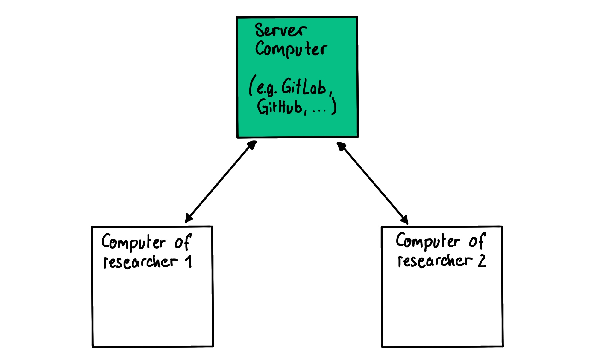

9 Version control
Version control systems can help us stay on top of our complex research projects, and in particular on changes in code and text. Version control can help with reproducibility in several ways.
What is version control?
Let’s say you are writing a paper. You will edit your paper and might want to keep different versions of it. A common way to handle that is by using different file names for different versions.

This way of “version control” is outdated and error-prone. The most common proper version control system today is Git, which I’d like to introduce to you now.
Git for version control
Git is free and open source 😃🙌.
With Git you can track different versions of your paper. For each version you can add a description (“commit message”) and you even automatically track who made which change if you are working in a group. You can always go back to old versions.
The way you work with Git is that you have the version database both on our computers and on a server. To get the changes from and to the server you use commands (pull = download stuff from server, push = upload stuff to server).

Most researchers use GitLab or GitHub as platforms for working with Git and they also serve as a neat front end for the server. GitLab and GitHub give us some extra neat features for collaboration (e.g. issues, Wiki, …).
Learning Git can be daunting 🙀. Historically it was developed by software engineers for other software engineers. That makes it particularly useful for us when writing code, but it can also feel a bit too nerdy in the beginning. I promise though, once you’ve got the hang of it, you’ll love it!
Install git on your computer 💻
Depending on the system you are working on, there are different ways to install git.
For the latest stable version for Linux Ubuntu run this command in your terminal:
apt-get install gitIf you are on Mac you can use homebrew to install it in your terminal. Install homebrew if you don’t already have it, then type:
brew install gitIf you are working on Windows, I recommend installing Git Bash. This provides you with a terminal where you can work similarly to the terminal on Mac and Linux, using the same commands. Git Bash also automatically installs Git for you. You can download Git for Windows here.
You can visit git-scm.com to get more information on how you can download git for your system.
For R users, I recommend following these instructions (up to “Test Installation” as we will use GitHub instead of GitLab in the following).
Create a new Repository on GitHub
Sign in to GitHub:
Open your browser, go to GitHub, and sign in to your GitHub account. If you don’t have an account, you can create one by clicking on the “Sign up for GitHub” button.
Create a New Repository:
In the upper-right corner of any page, click on the + icon and select “New repository.” Alternatively, on your GitHub profile page, click on the “Repositories” tab, and then click the green “New” button.
Fill out the Repository Information:
Enter a Repository name: Choose a name for your repository. This name will be part of your repository’s URL.
Enter a Description: Optionally, you can add a description of your repository.
Choose Public or Private: Decide whether you want your repository to be public (visible to everyone) or private (accessible only to people you specify).
Initialize this repository with a README: Check this option to create a README file for your repository. A README file provides information about your project.
Choose a .gitignore file: If your project involves specific programming languages or frameworks, you can select a
.gitignoretemplate to exclude certain files from version control. You don’t have to it for now.Choose a license: If you want to add an open-source license to your repository, you can choose one from the provided options. You don’t have to it for now.
Create the Repository: - Click the green “Create repository” button. Your new repository is now created.
Clone a GitHub Repository to your local machine
I will show you how to clone a repository with ssh key. When you are on Github in your repository and select the green button <> code, you can choose https or ssh under the cloning points. If you choose https you have to identify yourself later with your GitHub password. The SSH key is another authentication method that is more secure in comparison. If you want to know how to create an SSH key pair, check here.
Clone GitHub Repository with SSH URL:
Open the terminal on your computer.
Use the git clone command with the SSH URL of your GitHub repository to clone your repository to your local machine:
git clone git@github.com:username/repository.gitMake sure to replace username with your GitHub username and repository with your repository name.
Navigate into the newly created directory:
cd repositoryMake Changes:
Add files, modify existing files, or create new files in your local repository as needed.
Check Status and Stage Changes:
Check the status of your repository to see which files have been changed:
git statusStage the changed files:
git add .Commit Changes:
Commit the changes with a descriptive message:
git commit -m "Description of the changes made"Replace "Description of the changes made" with a brief description of the changes you made.
Push Changes to GitHub:
Push your changes to your GitHub repository:
git push origin mainAfter this step is successful, your changes are published to your GitHub repository! 🎉
Other version control systems
There are many other ways of doing version control out there.
Subversion: Simpler systems like Subversion are used less these days as Git offers more flexibility.
Google docs and friends: Many online text editors (Google Docs, OneDrive, …) offer versioning now. It is not as advanced and versatile, but a nice way to work in a WYSIWYG (What You See Is What You Get) editor. Git really only works with real text files, so people usually use LaTeX or Markdown (not WYSIWYG) to write texts when using Git.
Versioning data: Version control of data is a difficult task. Let’s leave that for another day. See here for more info for now.
Further reading
- Version Control, The Turing Way
- Version Control with Git, Software Carpentry
- Version Control with Git (for R users), Anna Krystalli
- Set up Git with RStudio & GitLab, Heidi Seibold